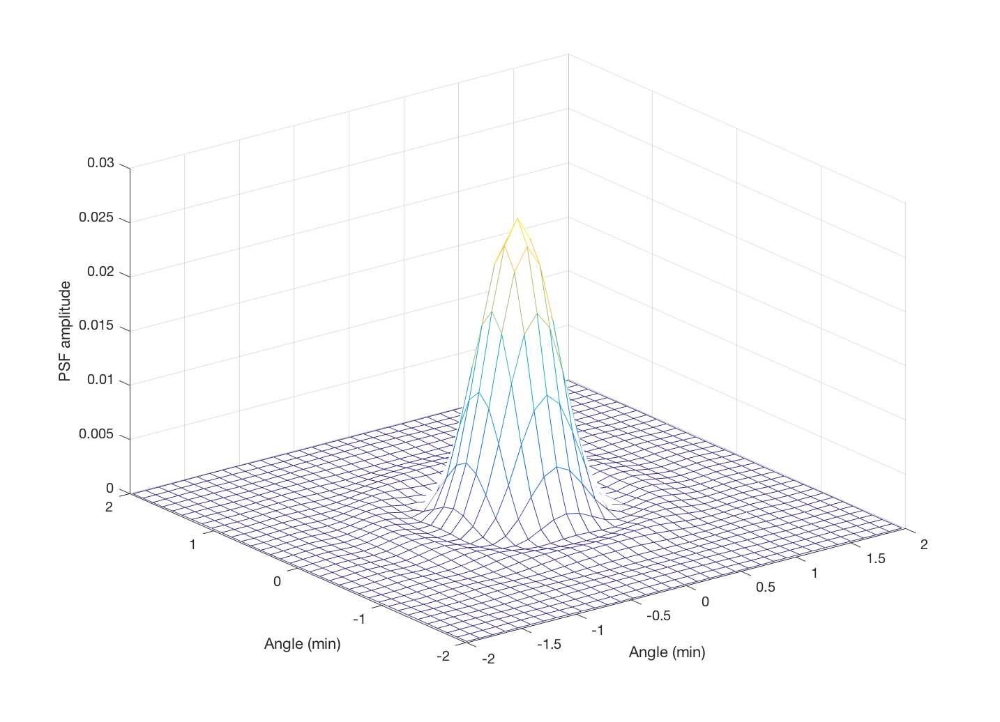
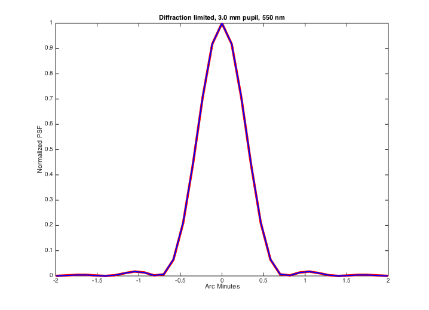
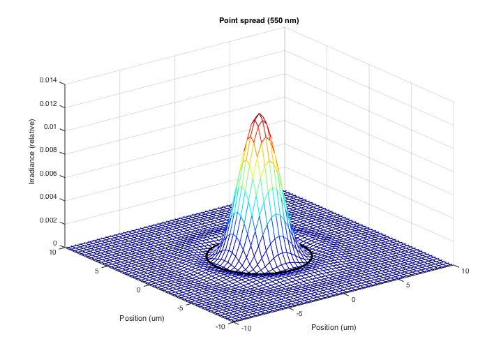
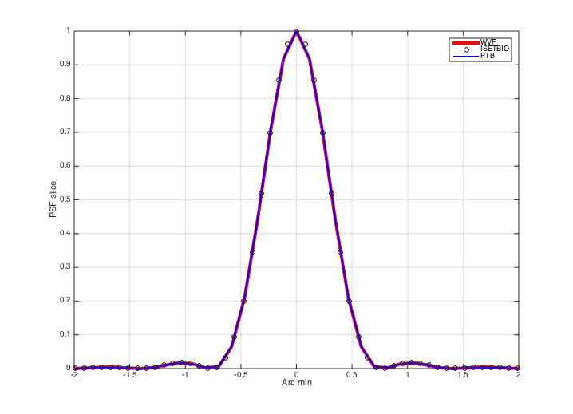
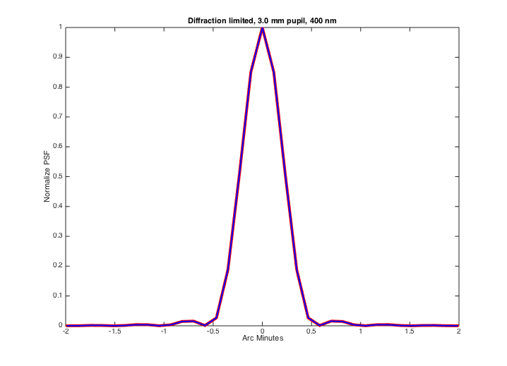
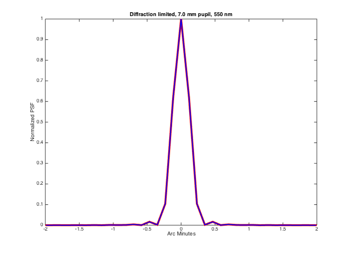
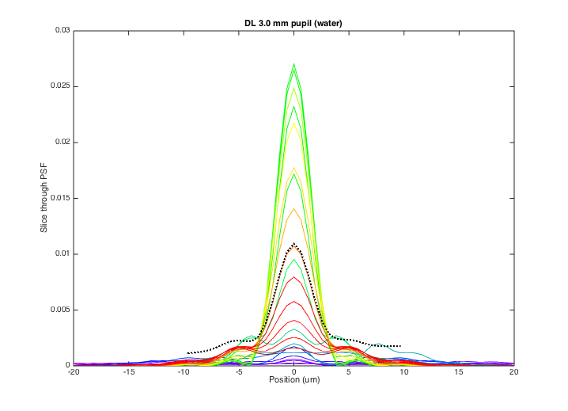

Contents
function varargout = v_wvfDiffractionPSF(varargin)
varargout = UnitTest.runValidationRun(@ValidationFunction, nargout, varargin);
end
Function implementing the isetbio validation code
function ValidationFunction(runTimeParams)
Initialize
close all; ieInit;
Some informative text
UnitTest.validationRecord('SIMPLE_MESSAGE', 'Check diffraction limited PSFs.');
Compare pointspread function in wvf with psf in Psych Toolbox
wvf0 = wvfCreate;
calcPupilMM = 3;
wvf0 = wvfSet(wvf0,'calc pupil size',calcPupilMM);
maxMM = 1;
maxUM = 20;
maxMIN = 2;
wList = wvfGet(wvf0,'calc wave');
Calculate the PSF, normalized to peak of 1
wvf0 = wvfComputePSF(wvf0);
psf = wvfGet(wvf0,'psf');
diffpsf = wvfGet(wvf0,'diffraction psf');
UnitTest.assertIsZero(max(abs(psf(:)-diffpsf(:))),'Internal computation of diffraction limited psf',0);
calcWavelength = wvfGet(wvf0,'wavelength');
measWavelength = wvfGet(wvf0,'measured wavelength');
UnitTest.assertIsZero(max(abs(measWavelength(:)-calcWavelength(:))),'Measured and calculation wavelengths compare',0);
Plots
wvfPlot(wvf0,'2dpsf space','um',wList,maxUM);
wvfPlot(wvf0,'2dpsf angle','min',wList,maxMIN);


Plot the middle row of the psf, scaled to peak of 1
wvfPlot(wvf0,'1d psf angle normalized','min',wList,maxMIN);
hold on
arcminutes = wvfGet(wvf0,'psf angular samples','min',wList);
arcminpersample = wvfGet(wvf0,'ref psf sample interval');
arcminpersample1 = wvfGet(wvf0,'psf arcmin per sample',wList);
arcminpersample2 = wvfGet(wvf0,'psf angle per sample',[],wList);
if (arcminpersample1 ~= arcminpersample)
error('PSF sampling not constant across wavelengths');
end
if (arcminpersample2 ~= arcminpersample1)
error('Default units of get on ''psfanglepersample'' unexpectedly changed');
end
index = find(abs(arcminutes) < 2);
radians = (pi/180)*(arcminutes/60);
ptbPSF = AiryPattern(radians,calcPupilMM ,calcWavelength);
plot(arcminutes(index),ptbPSF(index),'b','LineWidth',2);
xlabel('Arc Minutes');
ylabel('Normalized PSF');
title(sprintf('Diffraction limited, %0.1f mm pupil, %0.f nm',calcPupilMM,calcWavelength));
UnitTest.validationData('ptbPSF', ptbPSF);

Do the same thing using isetbio functions
thisWave = 550;
oi = oiCreate;
optics = oiGet(oi,'optics');
fLength = 0.017;
fNumber = 17/calcPupilMM;
optics = opticsSet(optics,'flength',fLength);
optics = opticsSet(optics,'fnumber',fNumber);
oi = oiSet(oi,'optics',optics);
uData = oiPlot(oi,'psf',[],thisWave);
set(gca,'xlim',[-10 10],'ylim',[-10 10]);
UnitTest.validationData('oi', oi);

Now, compare all three
[r,c] = size(uData.x);
mid = ceil(r/2);
psfMid = uData.psf(mid,:);
posMM = uData.x(mid,:)/1000;
posMinutes = 60*(180/pi)*(atan2(posMM,opticsGet(optics,'flength','mm')));
g = wvfPlot(wvf0,'1d psf angle normalized','min',wList,maxMIN);
hold on
plot(posMinutes,psfMid/max(psfMid(:)),'ko')
hold on
plot(arcminutes(index),ptbPSF(index),'b','LineWidth',2);
xlabel('Arc min')
set(gca,'xlim',[-2 2])
grid on
legend('WVF','ISETBIO','PTB');
UnitTest.validationData('wvf0', wvf0);

Repeat the PSF calculation with a wavelength offset
wvf1 = wvf0;
wList = 400;
wvf1 = wvfSet(wvf1,'wave',wList);
lcaDiopters = wvfLCAFromWavelengthDifference(wvfGet(wvf1,'measured wl'),wList);
wvf1 = wvfSet(wvf1,'calc observer focus correction',lcaDiopters);
wvf1 = wvfComputePSF(wvf1);
w = wvfGet(wvf1,'calc wave');
pupilSize = wvfGet(wvf1,'calc pupil size','mm');
wvfPlot(wvf1,'1d psf angle normalized','min',w,maxMIN);
hold on
ptbPSF = AiryPattern(radians,pupilSize,w);
plot(arcminutes(index),ptbPSF(index),'b','LineWidth',2);
xlabel('Arc Minutes');
ylabel('Normalize PSF');
title(sprintf('Diffraction limited, %0.1f mm pupil, %0.f nm',pupilSize,w));
UnitTest.validationData('wvf1', wvf1);
UnitTest.validationData('ptbPSF1', ptbPSF);
arcminpersample2 = wvfGet(wvf1,'psf angle per sample','min',w);
if (arcminpersample2 ~= arcminpersample)
error('PSF sampling not constant across wavelengths');
end

Use a different pupil size at original wavelength
wvf2 = wvf0;
pupilMM = 7;
wvf2 = wvfSet(wvf2,'calc pupil diameter',pupilMM);
wvf2 = wvfComputePSF(wvf2);
wList = wvfGet(wvf2,'calc wave');
pupilSize = wvfGet(wvf2,'calc pupil size','mm');
wvfPlot(wvf2,'1d psf angle normalized','min',wList,maxMIN);
ptbPSF = AiryPattern(radians,pupilSize,wList);
hold on
plot(arcminutes(index),ptbPSF(index),'b','LineWidth',2);
xlabel('Arc Minutes');
ylabel('Normalized PSF');
title(sprintf('Diffraction limited, %0.1f mm pupil, %0.f nm',pupilSize,wList));
UnitTest.validationData('wvf2', wvf2);
UnitTest.validationData('ptbPSF2', ptbPSF);

Show the PSF slices across wavelengths along with the 'white'
wvf3 = wvf0;
pupilMM = 3.0;
thisWave = 420:10:650;
cmap = squeeze(xyz2srgb(XW2RGBFormat(ieReadSpectra('XYZ',thisWave),length(thisWave),1)));
wvf3 = wvfSet(wvf3,'calc wave',thisWave);
wvf3 = wvfSet(wvf3,'calc pupil diameter',pupilMM);
wvf3 = wvfComputePSF(wvf3);
vcNewGraphWin;
for ii=1:length(thisWave)
if ii == 1
[u,pData] = wvfPlot(wvf3,'1d psf space','um',thisWave(1),5*maxMIN,'no window');
x = u.x; y = u.y/sum(u.y(:));
set(pData,'color',cmap(ii,:),'LineWidth',1);
end
hold on
[uData, pData] = wvfPlot(wvf3,'1d psf space','um',thisWave(ii),'no window');
thisY = interp1(uData.x,uData.y,x);
y = y + thisY;
set(pData,'color',cmap(ii,:),'LineWidth',1);
end
str = num2str(thisWave');
y = y/length(thisWave);
p = plot(x,y,'k:'); set(p,'LineWidth',2);
str(end+1,:) = 'wht';
xlabel('Position (um)');
ylabel('Slice through PSF');
set(gca,'xlim',[-20 20])
title(sprintf('DL %0.1f mm pupil (water)',wvfGet(wvf3,'calc pupil diameter')));

end